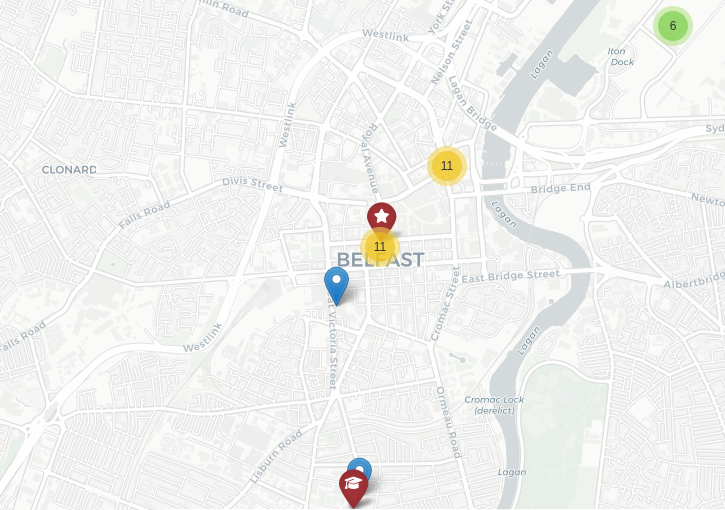

To transport wedding guests at the end of the event from the wedding venue to different locations in hotels and airbnbs, the bride's parents has hired you to programme a route to trasnport the guests from the wedding venue to their accommodations in Belfast .
The task is to find an optimal route to transports all guests from the wedding venue to their different accomodations in Belfast. There is a budget restriction of only hiring one bus.
To help with the logistics in the wedding day, guest shared the geo-location of the place where they will be staying in advance to help to plan a route that will transport at the place they were staying. The guests are staying mainly in around Belfast city centre (11 guests) and suroundings (11 guests) and a few numbers of guests staying in the eghes of the city as it can be seen in the map below.

This is a case of Vehicule Routing Problem (VPR) where the constrains is the capacity of the bus which is 30 passengers. The trasnport will depart from the wedding venue at the end of the event and will not return to the wedding venue.
The capacity was fully used to transport guests at the end of the event to their accomodations in Belfast. One challenge was that when using ox.distance.nearest_nodes function the route created initially contained isolated locations. This occured as the function attemps to find the closest street network node to a given latitude and logintude and when the points are too far from the drivable network create "disconnected" poins. The pottential solution taken were to move those points to the closest street network node. The final route is shown below.
If there were not a budget constrain, it would be interesting to compare the option of hiring two mini-buses and identify the best option using as a optimisation criteron time or bus utilised capacity.